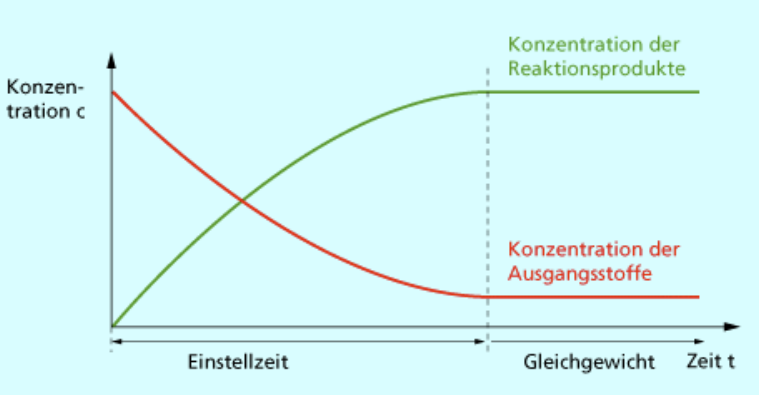

⚡ Was ist Reaktionsgeschwindigkeit?
Die Reaktionsgeschwindigkeit gibt an, wie schnell sich die Konzentration der Reaktionsteilnehmer mit der Zeit ändert. Sie ist ein Maß dafür, wie schnell chemische Reaktionen ablaufen.
📐 Mathematische Definition
v̄ = |Δc| / Δt
v̄ = mittlere Reaktionsgeschwindigkeit
Δc = Konzentrationsänderung
Δt = Zeitintervall
Δc = Konzentrationsänderung
Δt = Zeitintervall
📊 Konzentrations-Zeit-Diagramm

🔍 Einflussfaktoren der Reaktionsgeschwindigkeit
🌡️ Temperatur
RGT-Regel: Temperaturerhöhung um 10°C verdoppelt oft die Reaktionsgeschwindigkeit
Höhere Temperatur → höhere kinetische Energie → mehr effektive Stöße
📏 Konzentration
Höhere Konzentration → mehr Teilchen → häufigere Zusammenstöße → höhere Reaktionsgeschwindigkeit
⚡ Zerteilungsgrad
Größere Oberfläche → mehr Kontaktmöglichkeiten → schnellere Reaktion
Beispiel: Zuckerwürfel vs. Puderzucker